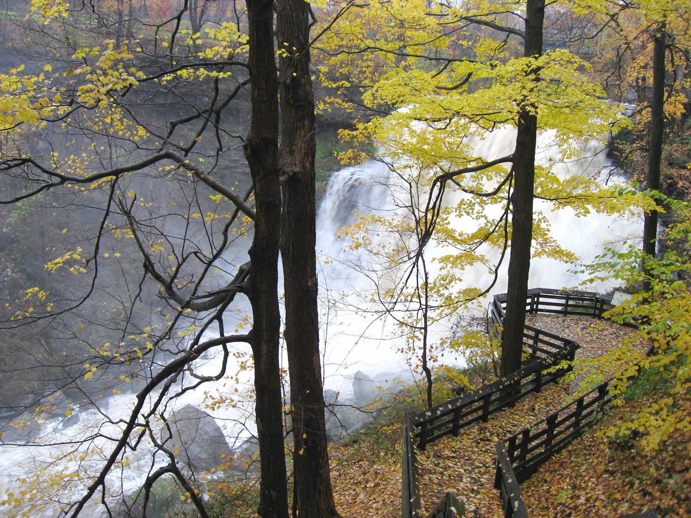
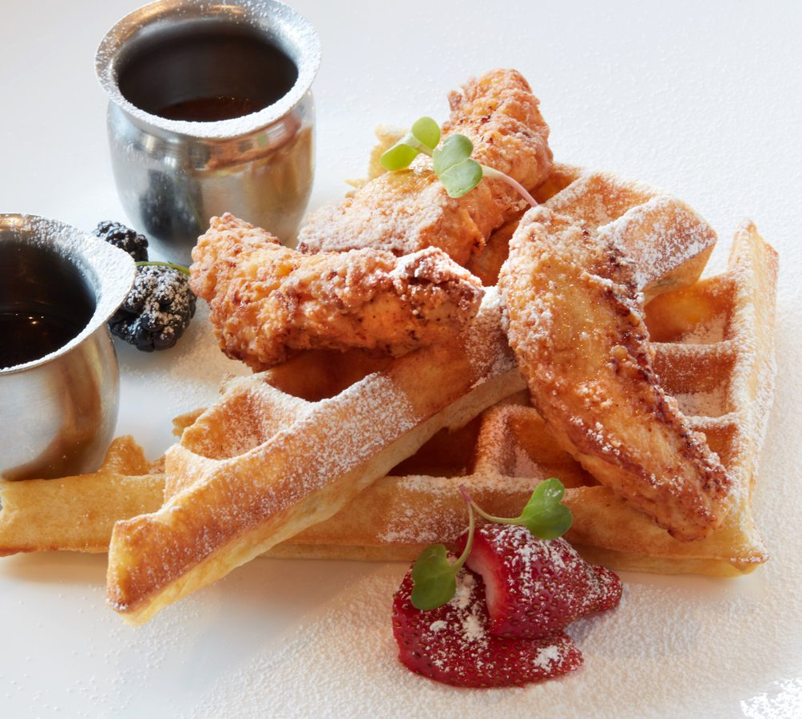
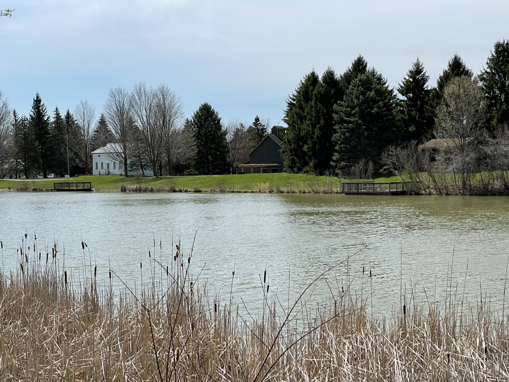

Cuyahoga Valley Nature & scenery
Cuyahoga Valley National Park
Make a day of waterfall overlooks, forest trails and the Ohio & Erie Canal Towpath. Brandywine Falls is a memorable place to start.
YOUR NEIGHBORHOOD GUIDE
Home2 Suites by Hilton Stow Akron
Trail time, live music and a little room to explore. Start your Northeast Ohio visit in Stow.
Make a little room for discovery.
Landmarks, museums and memorable places in the area and beyond.

Cuyahoga Valley Nature & scenery
Make a day of waterfall overlooks, forest trails and the Ohio & Erie Canal Towpath. Brandywine Falls is a memorable place to start.
Akron Historic estate
Tour the Tudor Revival manor and wander the landscaped gardens. Check the estate’s seasonal calendar for tours and special events.
Akron Family outing
Meet wildlife from around the world and explore habitats designed for an easy family day out. Check admission and seasonal experiences before visiting.
Kent Fashion & design
Discover fashion, textiles and decorative arts in a university museum with changing exhibitions. A thoughtful indoor stop for a day in Kent.
Explore dates, discover local events and plan your stay with our interactive calendar.
Explore the events calendar ↗Good food. Great company.
From a quick bite to a special evening, find a table that fits your plans.

Cuyahoga Falls Brunch & dinner
Make time for a leisurely brunch, baked goods or dinner at this State Road café. Browse the current menu and reserve ahead for your visit.
Stow Comfort food
A relaxed neighborhood stop for traditional American comfort food, from breakfast favorites to a casual meal later in the day.
Downtown Cuyahoga Falls Creative comfort food
Explore inventive comfort food, sandwiches and entrées on Front Street. A convenient dinner stop before an evening around downtown Cuyahoga Falls.
Stow Burgers & shakes
Try a Northeast Ohio drive-in tradition with burgers, sides and shakes served to your car. Check the Stow location’s menu before heading over.
Stay a little. Explore a lot.
Fresh air, local shops and easy ways to make the most of your time here.

Stow Parks & play
Spend an easy afternoon around Heritage Lake, picnic areas and the playground. Bring the family for fresh air and room to explore.
Stow Golf
Fit a round of golf into your stay at Stow’s public course. Check tee times and course details before making your plans.
Munroe Falls Trails & fresh air
Explore wooded trails and open landscapes just beyond Stow. Review the park map and current trail alerts to choose your route.
Cuyahoga Falls Shops & riverfront
Stroll Front Street, browse independent shops and stop for coffee or a treat. Check downtown’s calendar for markets and seasonal happenings.
A mix of nearby favorites and regional outings. Check venue websites for current hours, reservations, tickets and seasonal access before traveling. Photos show featured destinations; menus and experiences may change. Guide reviewed October 28, 2026.